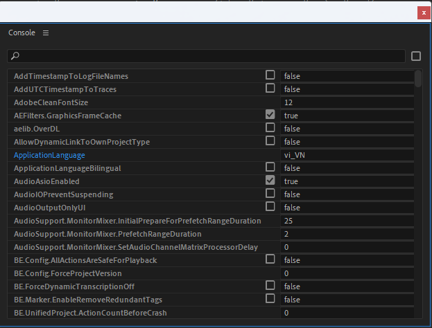
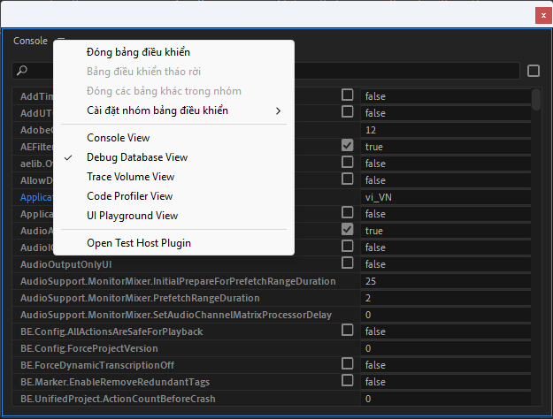
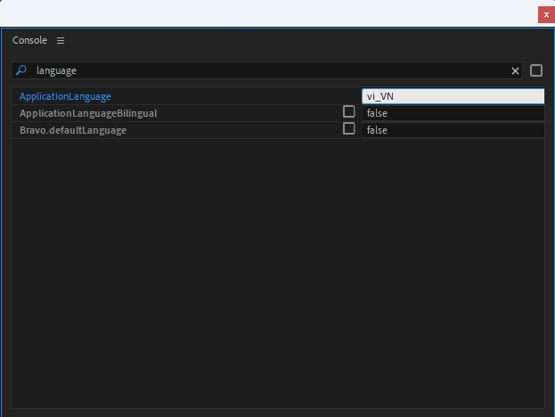

Dự án cung cấp bản dịch tiếng Việt mượt mà cho giao diện người dùng của Adobe Premiere Pro. Giúp cộng đồng Editor Việt Nam phá bỏ rào cản ngôn ngữ, thao tác nhanh chóng và làm chủ công cụ dễ dàng hơn.
Cung cấp bản dịch tiếng Việt hoàn chỉnh cho các menu, công cụ và hướng dẫn, đảm bảo ngữ nghĩa chuyên ngành.
Xây dựng dưới dạng mã nguồn mở, cho phép cộng đồng dễ dàng đóng góp, duy trì và cập nhật bản dịch theo thời gian.
Giúp người mới học biên tập video tại Việt Nam dễ dàng làm quen và thao tác với phần mềm chuyên nghiệp này.
Chỉ với vài thao tác đơn giản, bạn đã có thể chuyển đổi giao diện.
Tải tệp ZIP gốc ở phần dưới của trang này. Giải nén và sao chép các tệp đã dịch vào thư mục cài đặt Adobe Premiere Pro trên máy tính.
*Lưu ý: Nếu bị yêu cầu thay thế, hãy sao lưu các tệp gốc trước khi ghi đè.
Mở ứng dụng Adobe Premiere Pro lên và tiến hành mở 1 project bất kỳ, hoặc bạn có thể tạo một project mới hoàn toàn.
Bấm tổ hợp phím Ctrl + F12 (hoặc Cmd + F12 trên Mac) để mở bảng Console.

Click chuột phải vào biểu tượng 3 dấu gạch ngang (hamburger menu) ở góc trên bên trái của bảng Console, sau đó chọn "Database view".

Trong thanh tìm kiếm của bảng Database view, gõ từ khóa "language". Tìm đến dòng ApplicationLanguage và đổi giá trị thành "vi_VN".

Hãy tắt và khởi động lại phần mềm Adobe Premiere Pro của bạn. Giao diện lúc này đã được chuyển sang tiếng Việt hoàn toàn.
Gói cài đặt chứa các tệp tin ngôn ngữ (vi_VN). Nhấn nút bên dưới để tải về miễn phí.
Tải file ZIP (.zip)